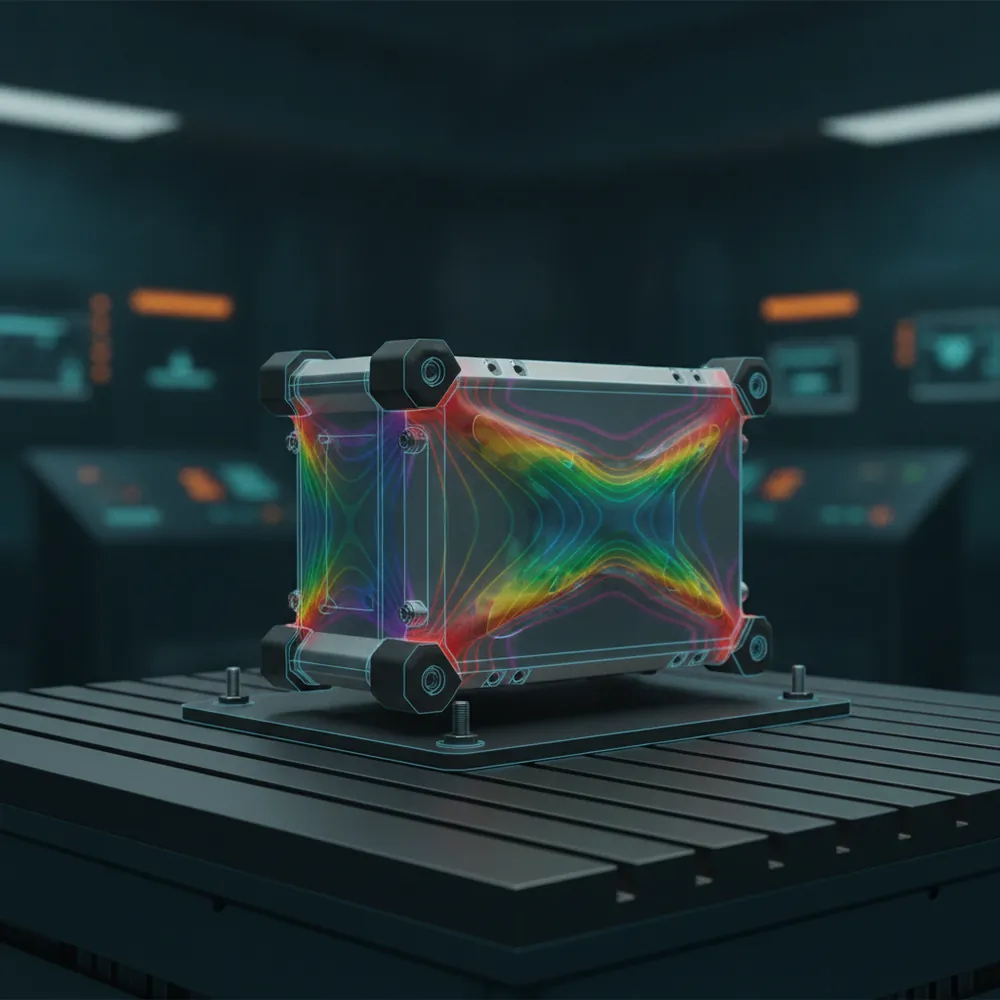

Defense hardware has to survive being shaken, dropped, and slammed — and pass MIL-STD-810 to prove it. Simulating the environments first means you show up to the shaker table already confident.

Illustrative simulation render. Actual studies are built to your geometry and requirements.
Typical funders: DoD SBIR · APFIT · Navy. Explore award sizes, deadlines, and direct links to every source in the Funding Finder.
Free Ansys evaluation licenses for the tools above, free engineering support to apply them to your MVP, and a free check on your Ansys Startup Program eligibility. Software and engineering only — never application advice.
Tell us about your project — incorporated, in stealth, or still an idea — and we'll line up the right Ansys tools and an engineer to help you validate the physics.
Relevant Ansys product pages: Mechanical on ansys.com ↗ LS-DYNA on ansys.com ↗ Sherlock on ansys.com ↗